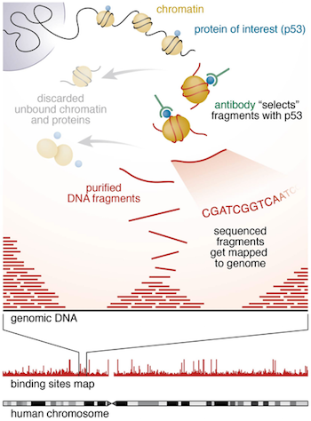
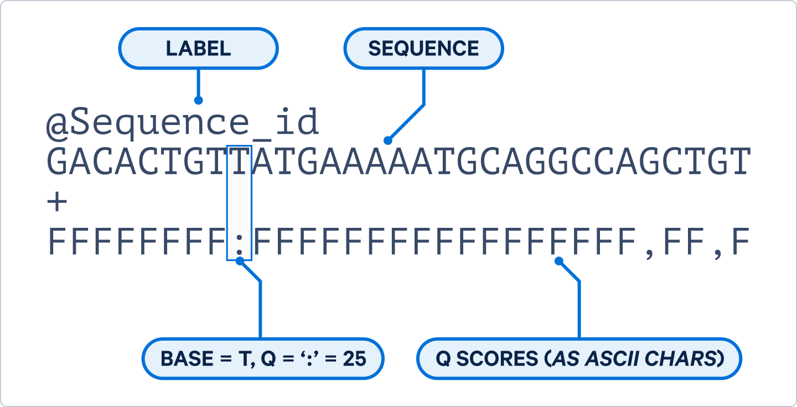

HTS data analysis (ChIP-seq)
Getting Started
Most of the steps carried out in this workshop could be applied to any short read sequencing workflow, today we are working with ChIP-seq data.
ChIP-seq
ChIP-seq (Chromatin immunoprecipitation followed by sequencing) is a lab based method to identify DNA-binding regions of specific proteins, often looking at either histone modifications or transcription factor binding sites, while the initial steps for these are the same, peak calling and downstream analysis will differ.

Connecting to the Server
Today, we will connect to one of the DRP servers to start our ChIP-seq journey. Connecting to the server is dependent on the machine you are working with. To connect
- Both Linux and Mac have a “Terminal”, which is command line and can connect to a server using ssh. By typing in the following in your terminal, you can easily connect to the DRP server.
Replace <UUN> by your own UUN or username.
ssh <UUN>@bifx-core1.bio.ed.ac.uk- For Windows, a tool like MobaXTerm needs to be installed to be able to connect to a server easily. Connecting uses ssh in this case as well. Take a look at the MobaXTerm demo to learn how to connect using ssh. Make sure to use you UUN as your username and the server link as follow:
bifx-core1.bio.ed.ac.ukYou might be asked if you trust the server, make sure to answer yes. Once you’ve entered your password you should connect to the server and see something like the following:
Welcome to Ubuntu 24.04.4 LTS (GNU/Linux 6.8.0-117-generic x86_64)
* Documentation: https://help.ubuntu.com
* Management: https://landscape.canonical.com
* Support: https://ubuntu.com/pro
################################################################################
THIS DEVICE IS PART OF A PRIVATE NETWORK.
Unauthorised access or use of this equipment is prohibited
and constitutes an offence under the Computer Misuse Act 1990.
If you are not authorised to use this system, terminate this
session now.
All activity on this system is monitored and recorded.
Please direct any queries to IS.Helpline@ed.ac.uk.
################################################################################
<UUN>@bifx-core1:~$This prompt shows that you are logged in to the bifx-core1 bioinformatics server, and that you are in your home directory (which is referred to using the ~ character on Linux systems).
Please see our website for more specific instructions on using the DRP-HCB bioinformatics servers.
Set Up Web Directory
Many of you might have previously set up a public_html directory, however if not, let’s create a public_html directory in your home. This will allow you to view files we create directly. To be able to easily access our file, we will link the project folder to the public_html.
cd
mkdir ~/public_htmlRunning ‘cd’ insures we are in our home space (although ‘~/’ specifies this is the path to your home already).
You should now be able to access files through https://bifx-core3.bio.ed.ac.uk/~<UUN> replacing the
Note: This is open to the public, so do not link to all of your data here.
Set up workshop directory
Lets start by creating a new folder for this workshop in our home directory
cd
mkdir ChIP-seq_workshopNow, We can link this directory to our public page;
ln -s ~/ChIP-seq_workshop ~/public_html/. Challenge:
Before we retrieve our data lets make sure we are all set up, how do you check that you have created both your public_html and workshop directories?
Solution
Solution.
Solution:
You can check if this was successfully created with ‘ls’ command
Use ‘pwd’ to check it is in the correct location
FASTQ Data
The FASTQ data used in this workshop has already been retrieved from ENCODE, for the purpose of this workshop it has been sub sampled to mostly map to a single chromosome, the full data sets are available on ENCODE here.
For reference, it is ChIP-Seq on Transcription Factor (TF) CTCF using human K562 cell line (chronic myelogenous leukemia), CTCF (CCCTC-binding factor) is a highly conserved zinc finger protein involved in 3D genome organisation and promoter enhancer interactions. There are two IP replicates and a single shared control (background input) sample, this is single end data.
| Accession | FileName | Condition | Replicate |
|---|---|---|---|
| ENCFF001HTO | CTCF_Rep1.fastq.gz | IP | One |
| ENCFF001HTP | CTCF_Rep2.fastq.gz | IP | Two |
| ENCFF001HTT | Input_Control.fastq.gz | Input | One |
We will create a fastq folder in our own workshop folders
cd ChIP-seq_workshop
mkdir fastqCreate a symbolic link to the data
ln -s /library/training/ASD/03_HTSDAC/data/*fastq.gz fastq/.Or if you are working on another machine, download the data using the following commands.
wget https://bifx-core3.bio.ed.ac.uk/training/ASD/03_HTSDAC/data/CTCF_Rep1.fastq.gz https://bifx-core3.bio.ed.ac.uk/training/ASD/03_HTSDAC/data/CTCF_Rep2.fastq.gz https://bifx-core3.bio.ed.ac.uk/training/ASD/03_HTSDAC/data/Input_Control.fastq.gz
mv *fastq.gz test/.FASTQ Format
As a brief reminder, FASTQ files contain both sequence data and PHRED quality scores, this determines the likely hood that a given base call is correct.

Challenge:
How long are the reads?
Solution
Solution.
Solution:
36bp You can view the compressed FASTQ file with zless
zless fastq/CTCF_Rep1.fastq.gz | head
Or look at the file details from the above ENCODE link